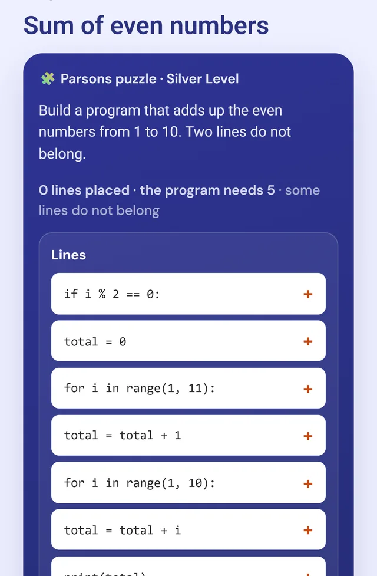
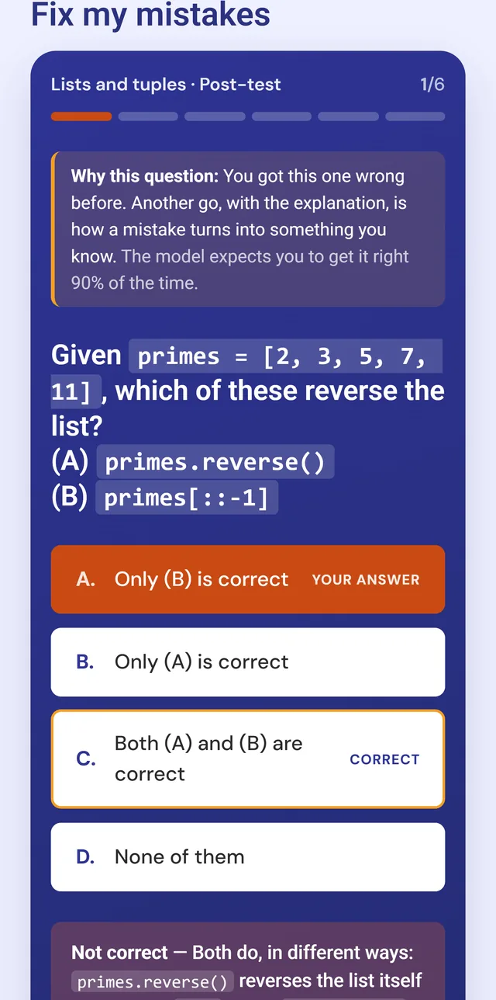
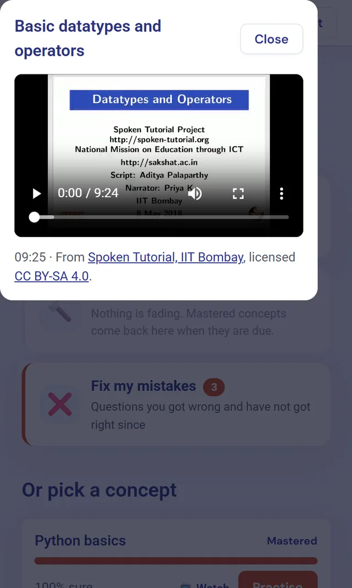
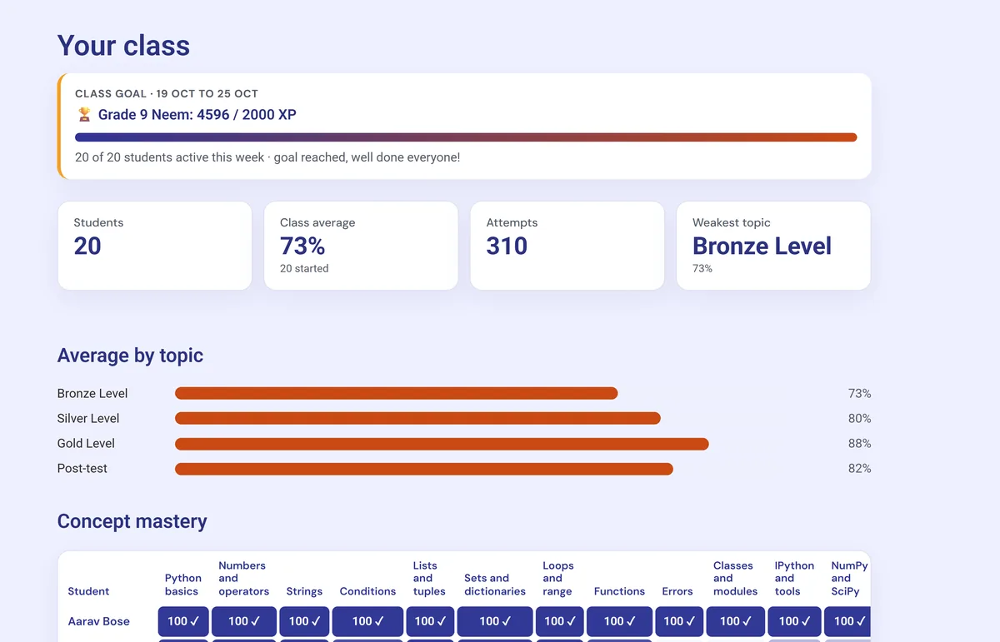

The problem
Good lessons are not enough to keep young learners going
Spoken Tutorial's video lessons teach Python well, but watching a video and answering multiple-choice questions can lose a young learner's interest.
"Why was I wrong?"
A plain multiple-choice test says what was wrong. It rarely says why, so the same mistake comes back.
Little to come back for
Repeated question formats give little sense of progress and little reinforcement between lessons.
Hard conditions
Many students, especially in rural schools, have short lab periods, shared tablets or lab computers, and patchy internet.
Who it is for
Three kinds of people, one app
Students
Grades 9 to 12, learning Python
- Always one clear next step
- An explanation after every answer
- Practice picked for what they find hard
- Quizzes and games that also work offline
Teachers
Not developers, and short of time
- Everything marked instantly
- Who needs help, and on what
- Questions drafted from a video, for them to approve
Coordinators
Run the programme across classes
- Progress of every class on one page
- Set up classes by pasting a list
- Edit questions and answers directly
What the app does
A student's route through the course
The course is one pyramid. Each level is a tier, and each lesson or game is a brick. A student builds upward and can always see how far they have come.
A keystone challenge of 10 mixed questions opens the level above. Passing it needs 70%.
Play with real Python
The game is the skill itself: putting lines of code in order, working through a loop step by step, or catching a bug. There are 9 kinds of game, and the code answers are checked against real Python.

Learn from every mistake
Each answer comes with an explanation. Practice then chooses the next question from what the student finds hard, and says why it chose that question. Mistakes come back until they are fixed.

Watch the lesson that teaches it
When a concept is weak, the matching Spoken Tutorial video plays inside the app, with captions and credit to its makers. Concepts that start to fade show on the pyramid as cracked bricks to repair.

For teachers
See who needs help, without marking anything
A teacher sees the class goal for the week, the average for each level, and how well each student knows each concept.

A made-up demo class. No real student data is shown.
Why it works this way
Designed from learning research
-
Practice until it is known
The app estimates what each student knows, concept by concept, and brings concepts back when they are due for review.
-
Build before writing
Ordering lines of code lets beginners make whole programs before they have to write one from scratch.
-
No public leaderboards
Rankings can discourage weaker students, so classmates share a weekly goal and never see a ranking.
-
Streaks that fit school
Streaks count school days, so a weekend never breaks one, and there are no lives to lose.
Try it
Open the demo and sign in
Choose the matching role on the sign-in page. The password for all three test accounts is password123.
Student
student1@school.comTeacher
anjali.deshpande@demo.exampleCoordinator
coordinator@school.comThe demo runs on a free server, so the first visit can take about a minute to wake up. It holds test accounts and made-up classes only.
EduPyramids also hosts the app for its own school accounts at python.edupyramids.org.